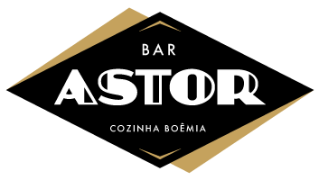

Bar Astor
Rua Delfina, 163 - Vila Madalena, São Paulo - SP

Horário de funcionamento: 12:00 as 01:00 (terça a domingo)
Musica ao vivo: aos sábados e domingos
Preço: $$$
Avaliação: ★★★★★
Bar e boemia. Palavras vizinhas, conceitos complementares. Um não vive sem o outro,
em qualquer bom lugar do mundo, a qualquer tempo. A boemia ordena,
o bar soluciona: um balcão confidente, um cocktail preciso, um chopp perfeito,
um petisco que aquece.